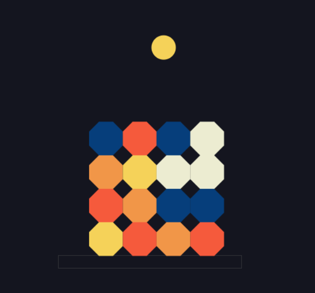

Primer desafio ALURA
Encriptador de textos para el desafio Alura
MatterJs
Juego estilo Angry Birds con la libreria MatterJs, elaborado por cuenta propia
Web de cursos 'Mini Alura'
Proyecto realizado en el marco de aprendizaje del programa Oracle Next Education (ONE)
Manejo de registros
Proyecto realizado en el marco de aprendizaje del programa Oracle Next Education (ONE) simulando el registro de turnos de clientes de una Petshop
Almacenamiento de datos locales en el navegador
Proyecto realizado en el marco de aprendizaje del programa Oracle Next Education (ONE) para la creacion y modificacion de listas de tareas




Habilidades
Phyton
JavaScript
MySQL
HTML
CSS
Java
En curso